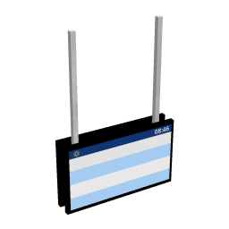
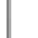

Railway Vision PIDS Pole

A Railway Vision PIDS with RV PIDS Pole attached on top
General
| Block ID |
jsblock:rv_pids_pole |
| Item Group | JCM Blocks |
| Light Level | 0 |
Other Information
| Added in | 1.0.5 |
| Created by | LX86 |
Railway Vision PIDS Pole
A Railway Vision PIDS Pole is a block in Joban Client Mod, used in conjunction with all PIDS block provided by Joban Client Mod (Except PIDS 1A).
Usage#
Place the pole on top of any PIDS block provided by Joban Client Mod (Except PIDS 1A) to extend the pole support.
Crafting Recipe#

Block states#
| facing | is_slab |
|---|---|
| north | true |
| east | false |
| south | |
| west |
History#
| Version | Changes Made |
|---|---|
| v1.0.5 | Added RV PIDS Pole |
| v1.1.4 | Railway Vision PIDS Pole now supports extending when a slab is on top |